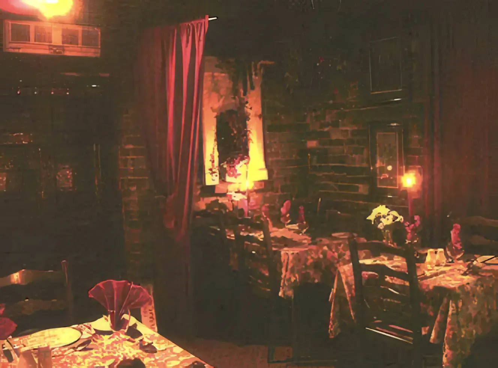
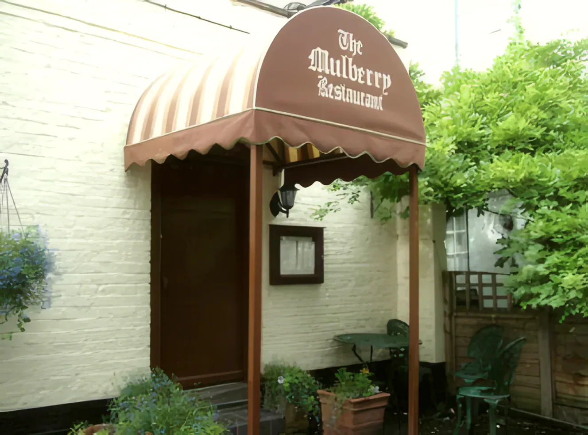
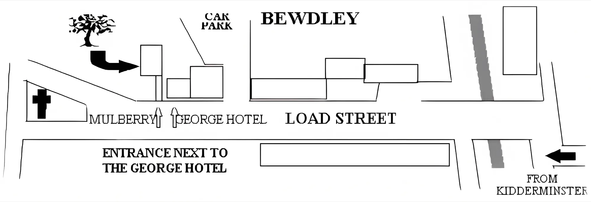

A candlelit restaurant in a 16th-century building in the middle of Bewdley, run by Jonathan and his team.
The Mulberry
We serve freshly cooked English cooking, with a French touch, in a 16th-century building in the centre of Bewdley. It's the place for a relaxing evening or a Sunday lunch: brick walls, red curtains and a candle on every table.
Jonathan runs the restaurant and the kitchen with his team, and the same people cook for Berry Catering, our outside catering for weddings, parties and private dinners at home.


From the visitors' book
Just charming. Lovely meal in cosy surroundings with attentive service. A hidden gem, who'd have thought it?!
Fran & Phil EdwardsIf you wish to celebrate a special occasion the Mulberry is the place to come. The friendly service is complemented by the excellent food. The menu is varied and imaginative and cooked to perfection. An evening to remember each and every time. I even travel from Scotland to feast here!
Violet's 75th birthday, 28 January 2006On the eighth day God created The Mulberry. Excellent food, excellent service, convivial surroundings, what more can you ask for?
Gwen and Bill Jones, 19 February 2006To the "à la chef", the very epitome of culinary perfection.
19 February 2006
Getting here
Our front door is at the end of the Market Alleyway on Load Street, directly opposite the Town Hall, next to the George Hotel. Look for our sign with the arrow.

By car
From the Kidderminster ring road take the A456, past the West Midlands Safari Park, to the next roundabout. Take the second exit to Bewdley town centre, cross the river bridge, and after 50 metres turn right into the main car parks.
We're under 10 minutes from Kidderminster and Stourport, 20 minutes from Halesowen and Stourbridge, 25 from Worcester and 30 from Birmingham.
Parking
Free parking (not overnight) right behind the restaurant in the Market car park, in through Dog Lane next to Bewdley Farm Shop. Or use either of the main car parks, two minutes' walk away.
Opening times
- MondayClosed (open for private parties of 20 or more)
- Tuesday to Saturday6.30pm till close, last orders 9pm
- Sunday12 noon till close, last orders 2pm
- Sunday eveningClosed (open for private parties of 20 or more)
Make a day of it
Bewdley sits on the River Severn. Before lunch or dinner, ride the Severn Valley Railway, visit the West Midlands Safari Park just down the A456, or walk along the river. More on the town at bewdleytown.co.uk.
See what's cooking on Instagram, @themulberrybewdley.